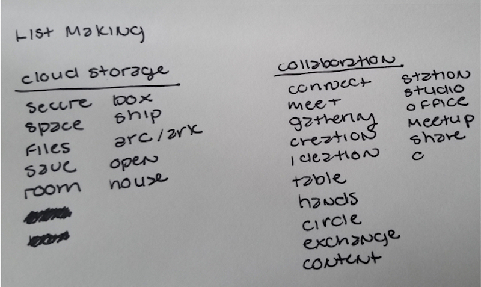
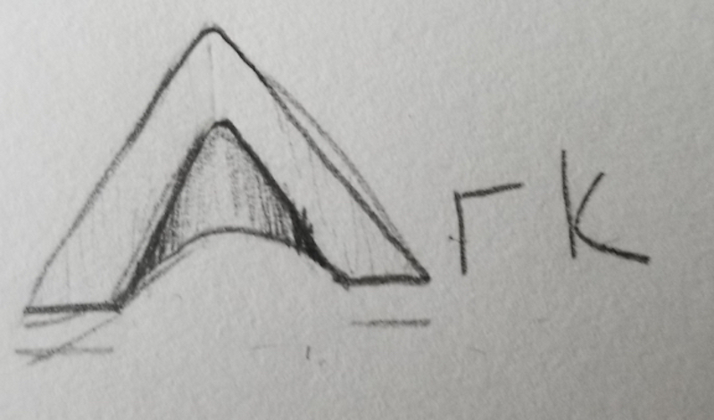
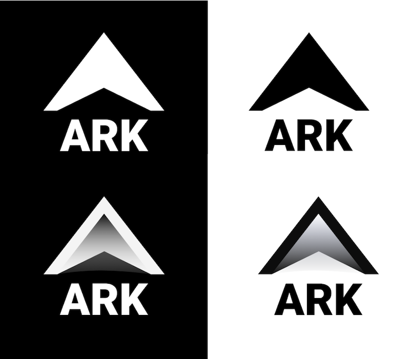
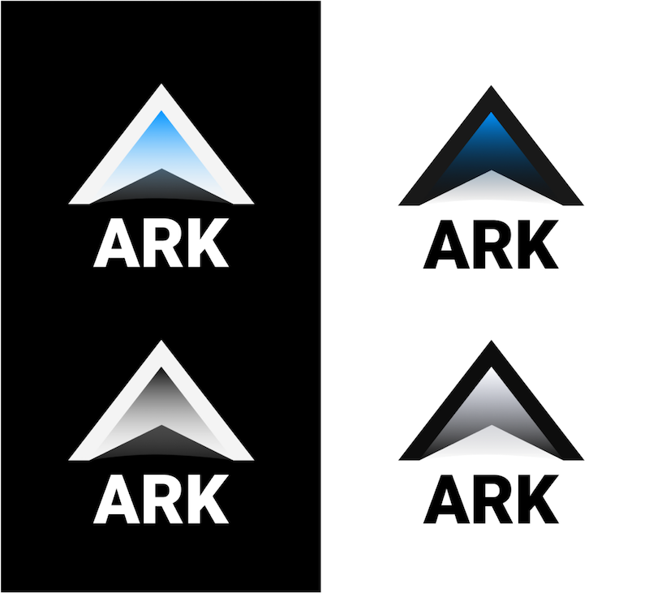
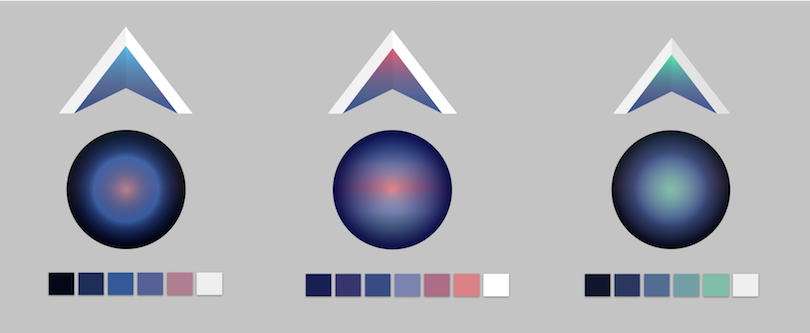

PROCESS > VISUAL DESIGN
Branding Work
I revisited the competitive analysis to determine the best positioning for the brand. My research showed me that positioning my brand as a solution to an ever growing problem in cybersecurity would be the best strategy.
Next, I had to create a brand identity reflecting the app’s attention to cybersecurity and its collaborative features.

My sketched out list-making technique.
My sketched out mind-mapping technique.
The Brand Name
I chose “Ark” as the brand name because it means “large box,” which is appropriate for describing a secure cloud storage system. It can also mean “a place of refuge.”
The Logo
I originally wanted to take advantage of ark’s homophonic counterpart, “arc,” and use it in branding. However, I chose to use a triangular arch instead. The triangle is considered the most secure shape and its form embodies the
brand’s focus on security.

The chosen logo concept, a metallic arc.
An arch formed from a stripped silhouette.
A space ship in the form of a three-dimensional “A”.
After sketching out many thumbnails, I landed on a few favorites. I chose to use the last thumbnail because it had a structure that could work on both small and large scale mediums. Based on feedback from my mentor, I separated the
graphic logo from the text for flexibility.
Moodboard
Cloud storage gives people access to a much larger space beyond their hard drives. I wanted to reflect this by utilizing the idea of "the cloud" and space, both from a cosmic and design perspective. The mood board presents many
colors, contrasts, and vibrancy, all of which were influenced by nebulae suspended in space and the spectrum of colors produced from the sun as it aligns with Earth's horizon.
The moodboard I created via Pinterest to pinpoint the aesthetic for Ark’s branding.
Logo Refinements
Logo concepts were sketched on paper first. Then, I chose what I considered the best design and digitized it in Figma.

Black and white logos I created for Ark. I used a gradient to help me enivision how color would affect the logo when added.
Brand Color
I assigned blue as the brand’s primary color after doing some research into color psychology. Often associated with trust, responsibility, and security, this was the color that aligned with the personality of the brand best.

This is the logo with a potential brand color applied. I would later opt for a flatter design, but the ideas was for the logo to resemble the blue light often associated with cybersecurity.
The Right Color Palette
Choosing a color palette for the brand took contemplation and experimentation. I had a specific look in mind, but what I brewed up in color scheme generators would not suffice. After suffering through enough trial and error, I tried
an alternative method. I extracted colors from the mood board I created for the project and made a few gradients.
Here are the results:

The top three color schemes I created for Ark.
“What do the spheres have to do with anything?”
Creating gradients in spheres made it easier for me to discern how well the colors flowed into each other, especially when comparing accent colors and background colors to one another.
Next, I ran a preference test on UsabilityHub to see which one expressed characteristics of the brand best. I received the following feedback:
Which of the following color schemes best illustrates security, trust, inspiration, creativity, and wonder?
Feedback received suggested I should stick to a a blue color scheme with a green accent color based
on the characteristics I hoped to reflect in the logo.
TAKE PREFERENCE TEST
The Deal with Gradients
At first, I assumed gradient logos didn't have many drawbacks when designed properly, but thanks to the feedback received from my preference test, DDC, and additional research, I changed my logo for the following reasons:
- ∙Gradients don’t always transfer well on digital mediums and don't always work well on print
- ∙Scaling down would remove the accent color in the logo from sight
Logo Variations - black and white.
Logo Variations - in color.
Updates to the Color Palette
I experienced some challenges when designing my hi-fi mockups with the heavily blue color palette voted on by testers. The light green primary buttons weren’t as prominent as I would have liked against navy backgrounds, especially
the homepage. It was too monochromatic and needed a pop of color to add warmth and vibrancy to the design. After taking a gander at the color wheel and checking out its psychological properties, orange became the secondary color.
Finding the Right Type
I chose Roboto Black as the brand typeface and Open Sans as the complementary typeface because of how well the two complements both the weight and personality of the brand and logo. Roboto Black mirrors the structure and weight of
the logo and is also a balanced collaboration of different moods – it’s modern and warm, not too cold or geometric. Open Sans makes a great partner for Roboto because it contrasts Roboto Black in both weight and width.
Challenges with Developing a Brand Identity
The most challenging part of this phase was understanding the cybersecurity threats to cloud storage services and developing a brand from my limited knowledge. I had to ensure the problem I present through my branding was accurate
and would make sense to the public. More research was necessary.